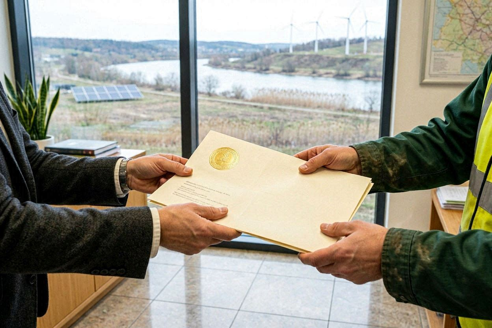
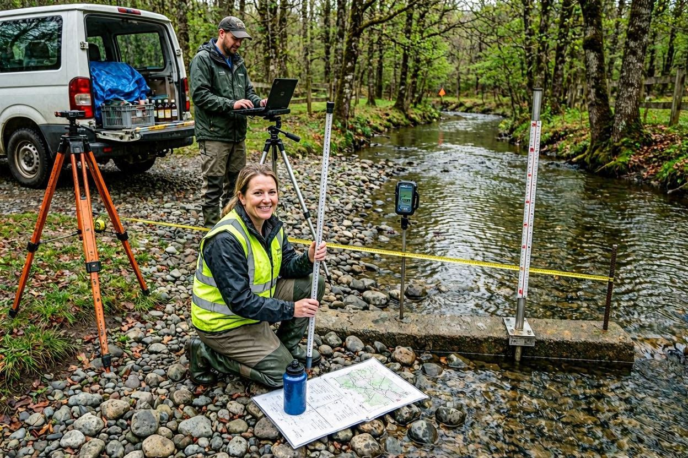
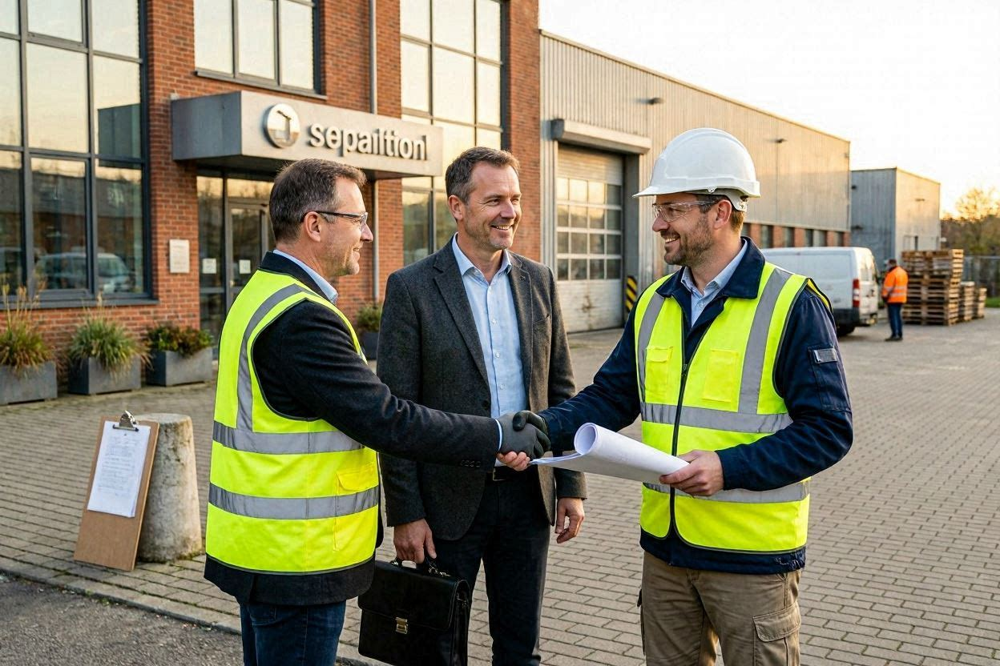
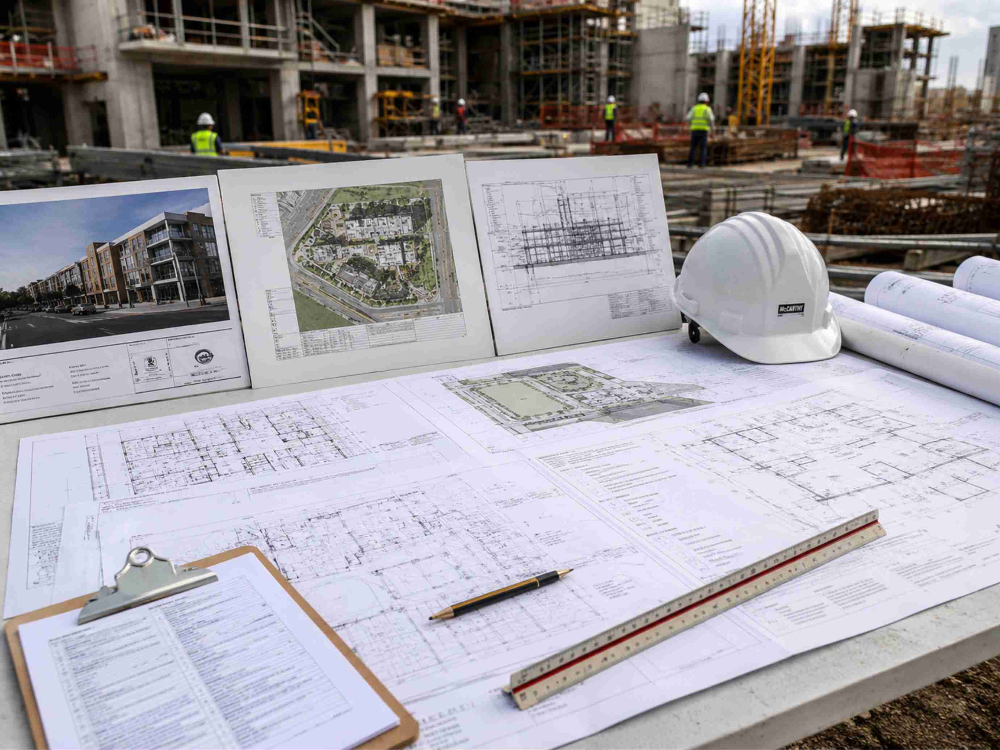
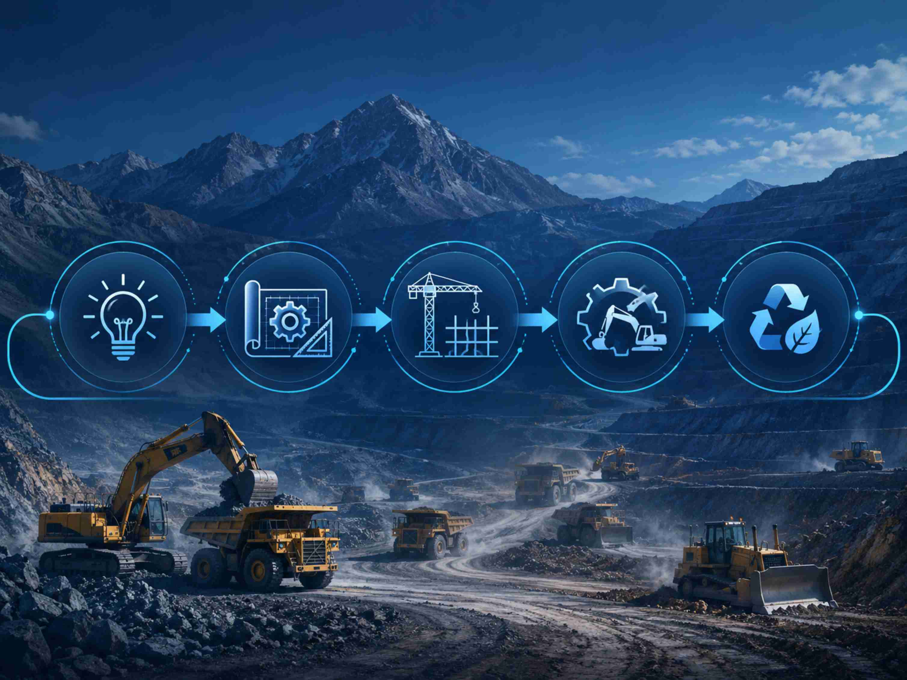

Licenciamento Ambiental
Mapas, dashboards, aplicações estáticas, ferramentas de cálculo, organização documental e futuros módulos web.
Conhecer soluçõesApoio técnico em licenciamento ambiental, outorga de direito de uso de recursos hídricos, saneamento, drenagem urbana, estudos ambientais, geoprocessamento, modelagem computacional, projetos e documentação para tomada de decisão.
Estruturação de estudos, projetos e pareceres com linguagem técnica, rastreabilidade metodológica e aplicação prática em empreendimentos, obras e processos ambientais.

Mapas, dashboards, aplicações estáticas, ferramentas de cálculo, organização documental e futuros módulos web.
Conhecer soluções
Recursos hídricos, disponibilidade hídrica e capacidade de autodepuração, disponibilidade hídrica, drenagem urbana e avaliação de sistemas de escoamento.
Ver área
Estudos e relatórios ambientais para obtenção de licenças ambientais, renovações e regularização. EAS, RAS, EIV, RIT, EIA/RIMA, PGRCC, RAPP, RDA...
Ver área
Projetos de drenagem, terraplenagem, rede distribuição de água, coleta de esgoto, ETE, planejamento de canteiro de obras, projeto arquitetônico, partido urbanístico.
Ver áreaA atuação da GCRH contempla estudos e projetos em saneamento, drenagem urbana, terraplenagem, estação de tratamento de esgoto, estudos ambientais e modelagens aplicadas.

Treinamentos aplicados em recursos hídricos, estudos ambientais, geoprocessamento, modelagem computacional e elaboração de documentos técnicos.
Materiais em PDF de uso e reprodução gratuítos para apresentar conceitos, requisitos e documentos necessários para contratação e aceitação de estudos técnicos.
Introdução à gestão de resíduos da construção civil para engenheiros civis e gestores ambientais.
Acessar materialFluxograma básico para instalação do LaTEX através do MikTEX e Texmaker.
Acessar materialEnvie as informações iniciais da sua demanda para análise preliminar e agendamento de reunião técnica.
Solicitar orçamentoYour browser language appears to be English. An English version is available.